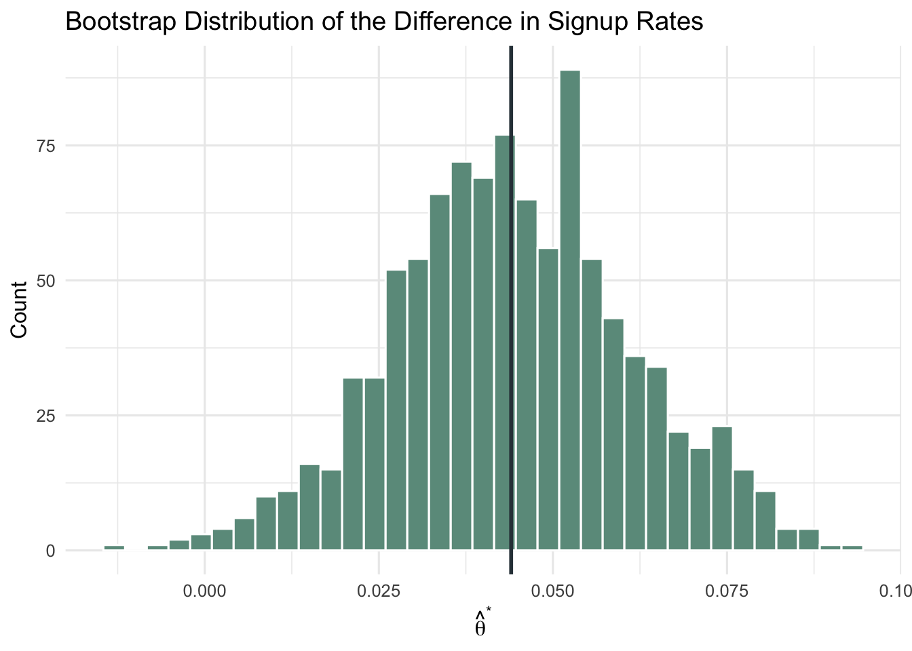
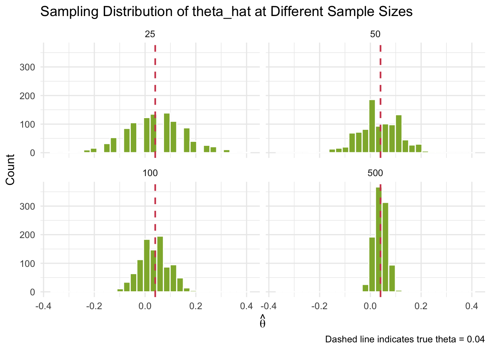

Simulating Key Ideas from Classical Frequentist Statistics
Author
Mengyao Ma
Published
April 13, 2026
Introduction
While updating my website landing page, I started thinking about a simple question: could a small change in wording lead to more newsletter sign-ups? The page includes a call to action (CTA), so I decided to compare two versions. CTA A says “Sign up for our newsletter here!” while CTA B says “Stay up to date by signing up!”
To figure out which one performs better, I use an A/B test. Visitors are randomly shown either CTA A or CTA B, and I compare the sign-up rates between the two groups. Random assignment matters because it helps keep the groups comparable, so any difference in conversion is more likely to come from the CTA wording rather than from differences in the visitors themselves.
The A/B Test as a Statistical Problem
Statistically, each visitor has a binary outcome: signup (1) or no signup (0). So each observation can be modeled as a Bernoulli random variable.
Let (_A) be the signup probability for visitors who see CTA A.
Let (_B) be the signup probability for visitors who see CTA B.
The parameter I care about is the difference in signup probabilities:
[ = _A - _B ]
Its sample estimator is the difference in sample means:
[ = X_A - X_B ]
Since (X{0,1}), each sample mean is just a sample proportion, so this is also (= _A - _B).
Simulating Data
In real A/B tests, we do not know the true values of (_A) and (_B). For this exercise, I set them myself so I can study how the estimator behaves when the truth is known.
I use:
[ _A = 0.22,_B = 0.18,= 0.04 ]
Then I draw 1,000 observations from each Bernoulli distribution.
The Law of Large Numbers (LLN) says that as sample size grows, the sample mean converges to the population mean. In this setting, LLN is why we expect () to get closer to the true () with enough data.
Following the assignment instructions, I compute element-wise differences (d_i = X_{A,i} - X_{B,i}), then plot the cumulative average (running mean) over the first 1, 2, …, 1,000 observations.
The curve is noisy early on, but it stabilizes as more observations are included and moves toward 0.04. That is exactly what LLN predicts.
Bootstrap Standard Errors
Once I have a point estimate, the next question is precision. Bootstrap provides a practical way to estimate standard errors by resampling from observed data.
I repeatedly sample with replacement from each group, recompute (), and then use the standard deviation of those bootstrap estimates as the bootstrap SE.
B <-1000boot_theta <-replicate(B, { xA_star <-sample(x_A, size = n, replace =TRUE) xB_star <-sample(x_B, size = n, replace =TRUE)mean(xA_star) -mean(xB_star)})boot_se <-sd(boot_theta)pA_hat <-mean(x_A)pB_hat <-mean(x_B)analytic_se <-sqrt(pA_hat * (1- pA_hat) / n + pB_hat * (1- pB_hat) / n)theta_hat <- pA_hat - pB_hatci_low <- theta_hat -1.96* boot_seci_high <- theta_hat +1.96* boot_sese_tbl <-tibble(metric =c("Estimate (theta_hat)", "Bootstrap SE", "Analytical SE", "95% CI (lower)", "95% CI (upper)"),value =c(theta_hat, boot_se, analytic_se, ci_low, ci_high)) %>%mutate(value =round(value, 4))se_tbl %>%render_table(title ="Precision of the A/B Estimate")
Precision of the A/B Estimate
metric
value
Estimate (theta_hat)
0.0440
Bootstrap SE
0.0171
Analytical SE
0.0179
95% CI (lower)
0.0106
95% CI (upper)
0.0774

The bootstrap SE and analytical SE are usually very close, and they are close here as well. Using the bootstrap SE, I construct a 95% confidence interval for ().
The Central Limit Theorem
The Central Limit Theorem (CLT) says that even when raw data are not Normal (here they are Bernoulli), sampling distributions of sample means become approximately Normal as sample size increases.
I simulate sampling distributions of () for (n {25, 50, 100, 500}), using 1,000 repetitions per sample size.

At (n=25), the histogram is rougher and less smooth. As (n) grows, the distribution becomes more bell-shaped, which is the CLT pattern we expect.
Hypothesis Testing
Given the CLT, I can run a formal test of:
[ H_0: = 0, H_1: ]
with test statistic:
[ z = ]
Under (H_0), () is centered at 0 and approximately Normal in large samples. Dividing by its SE standardizes it, giving a statistic that is approximately standard Normal, which allows direct p-value calculation.
People often call this a t-test in practice, but with Bernoulli outcomes and CLT-based approximation, this setup is closer to a z-test. In large samples, the practical difference is minimal.
If the p-value is below 0.05, I reject (H_0) and conclude the signup rates differ statistically. Otherwise, I do not have enough evidence to rule out no true difference.
The T-Test as a Regression
The two-sample test is mathematically equivalent to a simple regression:
[ Y_i = _0 + _1 D_i + _i ]
where (Y_i) is signup (0/1), and (D_i=1) for CTA A, (D_i=0) for CTA B.
(_0): mean signup rate in group B ((_B))
(_1): mean difference between A and B ((_A - _B = ))
reg_df <-tibble(Y =c(x_A, x_B),D =c(rep(1, n), rep(0, n)))fit <-lm(Y ~ D, data = reg_df)fit_tidy <-tidy(fit)reg_main <- fit_tidy %>%filter(term =="D") %>%transmute(estimate = estimate,std_error = std.error,t_stat = statistic,p_value = p.value )compare_tbl <-tibble(method =c("Difference in means", "Regression coefficient on D"),estimate =c(theta_hat, reg_main$estimate),se =c(analytic_se, reg_main$std_error),statistic =c(z_stat, reg_main$t_stat),p_value =c(p_val, reg_main$p_value)) %>%mutate(across(c(estimate, se, statistic, p_value), ~round(.x, 5)))compare_tbl %>%render_table(title ="Two-Sample Test vs. Regression Formulation")
Two-Sample Test vs. Regression Formulation
method
estimate
se
statistic
p_value
Difference in means
0.044
0.01789
2.45879
0.01394
Regression coefficient on D
0.044
0.01790
2.45756
0.01407
The two approaches should be very close. Small differences can come from standard error conventions (separate-variance formula vs default OLS assumptions). The practical value of this equivalence is that regression frameworks scale naturally to controls, interactions, and more complex experiments.
The Problem with Peeking
Now for a common real-world issue: peeking at results repeatedly before data collection is complete.
If each interim check uses (), every peek is another chance for a false positive. So the overall false positive probability across many peeks is higher than 5%.
I simulate the null case ((_A = _B = 0.20)): in each experiment, I generate 1,000 observations per group, test after every 100 observations per group (10 peeks total), and record whether any p-value is below 0.05. I repeat this for 10,000 experiments.
set.seed(20260414)R_peek <-10000peek_ns <-seq(100, 1000, by =100)pi_null <-0.20one_experiment_any_sig <-function() { a <-rbinom(1000, 1, pi_null) b <-rbinom(1000, 1, pi_null)for (nn in peek_ns) { a_n <- a[1:nn] b_n <- b[1:nn] th <-mean(a_n) -mean(b_n) se <-sqrt(mean(a_n) * (1-mean(a_n)) / nn +mean(b_n) * (1-mean(b_n)) / nn)if (se ==0) next z <- th / se p <-2* (1-pnorm(abs(z)))if (p <0.05) return(TRUE) }FALSE}any_sig <-replicate(R_peek, one_experiment_any_sig())fp_rate_peek <-mean(any_sig)single_test_fp <-0.05peek_tbl <-tibble(scenario =c("Single test at alpha = 0.05", "Peeking 10 times (every +100 users/group)"),false_positive_rate =c(single_test_fp, fp_rate_peek)) %>%mutate(false_positive_rate = scales::percent(false_positive_rate, accuracy =0.1))peek_tbl %>%render_table(title ="False Positive Rate Inflation from Peeking")
False Positive Rate Inflation from Peeking
scenario
false_positive_rate
Single test at alpha = 0.05
5.0%
Peeking 10 times (every +100 users/group)
19.8%
The peeking false positive rate is typically much higher than 5%. In practical terms, if stopping rules are not pre-registered (or corrected for repeated looks), A/B test decisions become too optimistic.
Closing Notes
My three main takeaways from this exercise are:
Point estimates are only the beginning; uncertainty (SEs and confidence intervals) is essential.
CLT makes many large-sample tools workable, but assumptions and approximations still matter.
Experimental design choices (like peeking) directly affect error rates, not just final p-values.